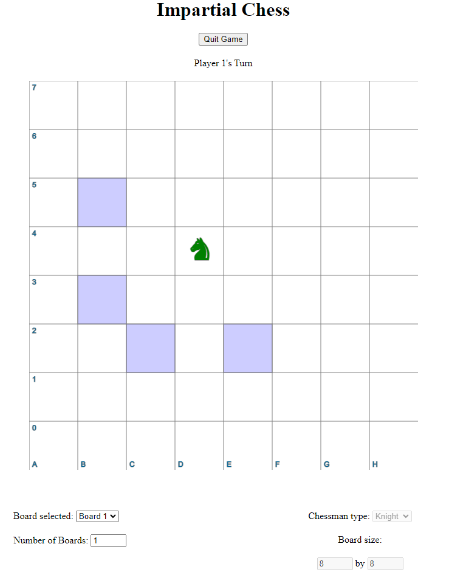

Impartial Chess
This program is not normal chess, but rather impartial chess. An impartial game is a game where there is no difference between player 1 and player 2 other than the order in which they take turns. For example, Tic-Tac-Toe is impartial, but normal chess is not impartial because player 1 can only move white pieces, and player 2 can only move black pieces. In impartial chess, the two players take turns moving the game piece(s), whose movement is restricted to be only towards the lower left corner of the board. The game is lost by the first player who can no longer make a move. This type of game is less interesting as genuine competition, and more from a mathematical perspective. It lends itself well as an introduction to a wide variety of weird and fascinating games to be studied rigorously. It becomes even more interesting when you vary certain factors, such as the type and number of pieces on the board, or the size or number of boards. The goal of this program is to provide a fast and easy way to play around with different configurations of impartial chess.
I was inspired to make this program by this Youtube video playlist by the late mathematician Elwyn Berlekamp. In it, he introduces the viewer to the field of combinatorial game theory through the example of impartial chess. If you're interested, take a look at the playlist or read more about impartial games here.
Technologies used: Javscript, HTML, CSS